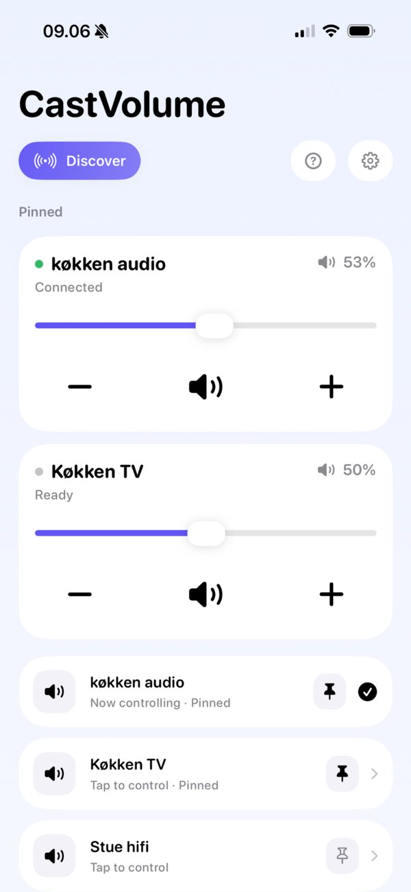
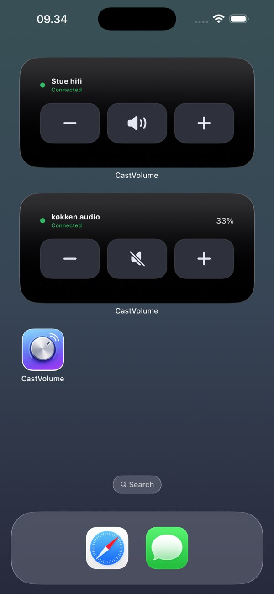
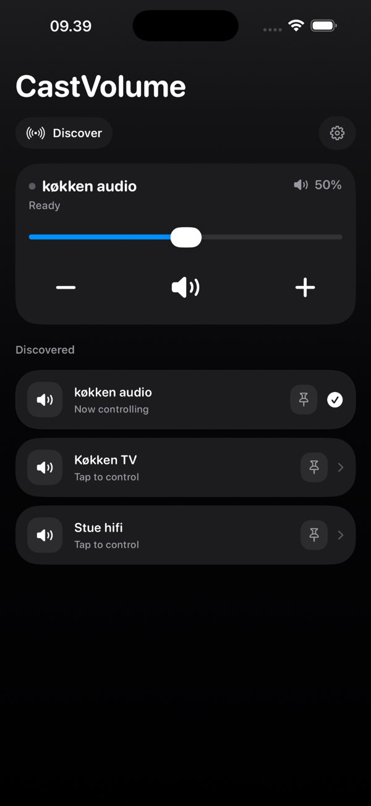
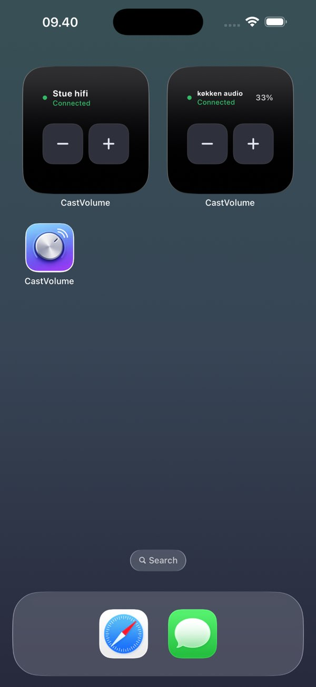
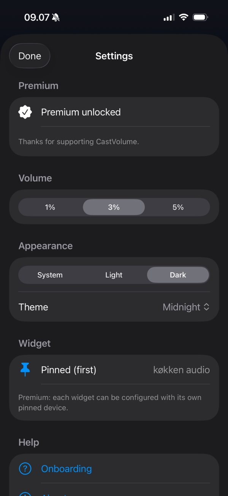

Fast discovery
Tap Discover to find Google Cast-enabled devices over Bonjour on the same network.
Native iOS app + widgets
CastVolume gives you instant volume and mute control for Google Cast-enabled TVs, speakers, and receivers on your local Wi-Fi. No sign-in. No pairing ritual. No queue clutter.



Straight from the App Store listing


Built for everyday control
Tap Discover to find Google Cast-enabled devices over Bonjour on the same network.
Drag the slider for an exact level, or step up and down at 1%, 3%, or 5% per tap.
Silence interruptions instantly without opening your streaming app.
Pin your regulars to the top of the app, each with its own slider and live level.
Small and medium Home Screen widgets send commands without launching the app. Requires iOS 17 or later.
Follow the system appearance or lock in light or dark, then pick the theme you like.
How it works
Allow local network access so the app can find Cast-enabled devices nearby.
Pinned devices move to the top of the app with their own slider, and feed your widgets.
Volume up, down, and mute from the Home Screen - the app never has to open.
Plans
Download and control, no account
Upgrade
One in-app purchase
Premium is an in-app purchase. Current pricing is shown in the App Store and inside the app.
Privacy first
CastVolume is designed for local-network control. It connects to devices on your Wi-Fi to send volume and mute commands. No account is required and no cloud dashboard is needed to get started.
Install CastVolume on iPhone and take volume control out of app-switching chaos.